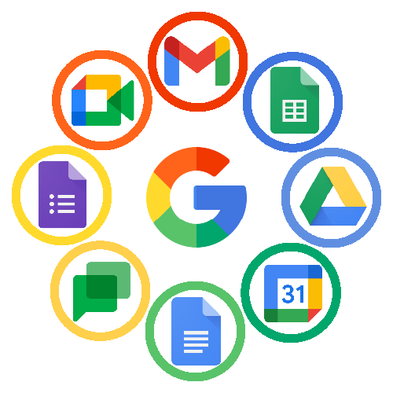

U tradicionalnom radnom okruženju slanje dokumenata putem e-mail priloga (attachment-a) godinama je stvaralo haos: desetine verzija istog fajla, zagubljene izmene i konstantno zapitkivanje „koja je najnovija verzija?”. Rad u Cloud okruženju (poput Google Drive-a ili Microsoft OneDrive-a) u potpunosti eliminiše ovaj problem i omogućava da više ljudi istovremeno radi na istom dokumentu u realnom vremenu.
1. Organizacija prostora: Folderi umesto radne površine (Desktopa)
Prva greška većine početnika je odlaganje svih dokumenata na jedan gomilajući Cloud drajv bez strukture. Dobro organizovan Cloud zasniva se na hijerarhiji:
- Glavni projekat / Predmet: Kreirajte krovni folder za svaku celinu (npr.
Digitalna_Pismenost_2026). - Podfolderi po tipu sadržaja: Razdvojite materijale na
Dokumenti,Prezentacije,Slike_i_LogoiiArhiva. - Standardizacija naziva: Fajlove imenujte jasno i razumljivo (npr.
Izveštaj_Novembar_v1.docxumestoDokument111.docx).
„Pravilo tri klika: Ako vam je potrebno više od tri klika da pronađete bilo koji dokument u Cloud-u, vaša folder struktura zahteva reorganizaciju.”
2. Prava pristupa: Viewer vs. Commenter vs. Editor
Kada delite fajl ili folder sa kolegom ili profesorom, ključno je izabrati odgovarajući nivo dozvole (Permissions):
- Viewer (Gledalac): Korisnik može samo da vidi i preuzme dokument. Idealno za finalne izveštaje, priručnike i materijale koji ne smeju da se menjaju.
- Commenter (Komentator): Korisnik može da čita i ostavlja predloge/komentare sa strane, ali ne može direktno prepravljati osnovni tekst. Odlično za recenzije i pregled rada.
- Editor (Urednik): Korisnik ima punu slobodu da menja, briše i dodaje sadržaj. Dodeljujte ovo pravo samo članovima tima u koje imate potpuno poverenje.
3. Tajno oružje: Istorija verzija (Version History)
Jedan od najvećih strahova pri zajedničkom radu jeste: „Šta ako neko slučajno obriše ceo tekst?”. U Cloud sistemima ovaj problem ne postoji zahvaljujući opciji Version History. U bilo kom trenutku možete otvoriti istoriju izmena, videti ko je i kada napravio promene, i jednim klikom vratiti dokument na stanje od pre dva dana ili dva sata.
4. Bezbednost pri deljenju linkova
Izbegavajte opciju „Anyone with the link can edit” (Svako sa linkom može da uređuje) za osetljive projekte. Ako taj link slučajno završi u javnoj grupi ili na društvenim mrežama, bilo ko može obrisati vaš rad. Uvek delite pristup direktno ukucavanjem e-mail adrese osobe kojoj šaljete dokument.